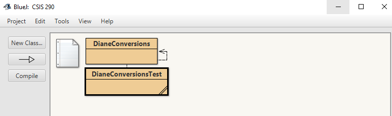
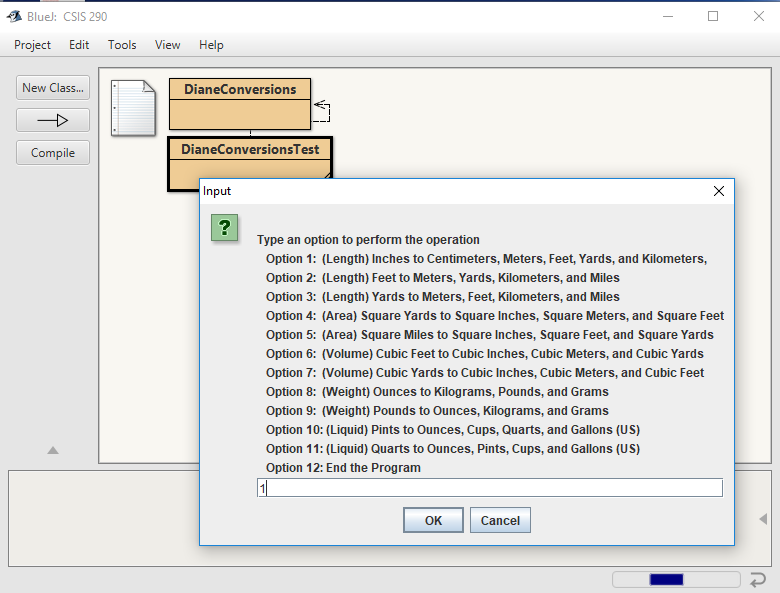
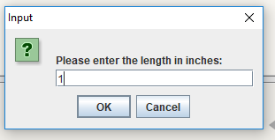
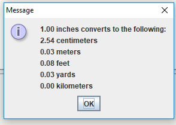
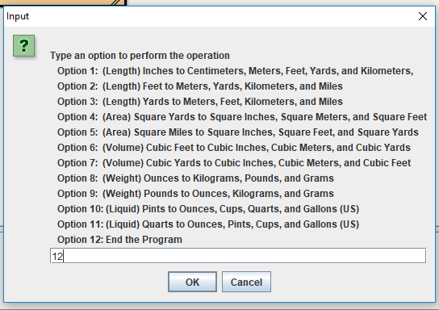

As a student learning software development, I learned many of the basics of object-oriented programming in both Java and C++. I chose to display snippets of my full Java portfolio on this page. Much of what I learned from the Java programming language can be seen below.
In the following example, I learned to create a program which converts units of measurement. The program was created using the BlueJ Java Development Environment.
In order to execute this program, the I was required to create two classes to run within BlueJ. The first class, DianeConversions, defines all the methods for the calculations that are to be used. The second class, DianeConversionsTest calls these methods when the program is run from the development environment. These classes appear as the following in the BlueJ environment:

The following shows what appears when the program is run through BlueJ. The first step asks for the user to input an option:

In this example, the user is inputs option 1, which converts from inches to other units of measurement. After the number "1" is entered, the user is prompted to enter the length which they would like to convert:

After the user presses the "OK" button, the measurement conversions are displayed:

Once the user hits "OK" on the preceding screen, the original menu appears. In order for the user to exit the program, they may hit the number "12" to exit out of the program:

The following is the code for the DianeConversions class and the DianeConversionsTest class:
DianeConversions
/**************************************************************** * This program defines all the methods for the calculations * * used in the DianeConversionsTest class * * Written by Diane Krauthamer * ****************************************************************/ public class DianeConversions{ // Definition of all the measurement conversion methods public static double inchesToCentimeters (double inches) { double centimeters; centimeters = inches * 2.54; return centimeters; } public static double inchesToMeters (double inches) { double meters; meters = inches * 0.0254; return meters; } public static double inchesToFeet (double inches) { double feet; feet = inches / 12; return feet; } public static double inchesToYards (double inches) { double yards; yards = inches / 36; return yards; } public static double inchesToKilometers (double inches) { double kilometers; kilometers = inches / 39370.1; return kilometers; } public static double feetToMeters (double feet) { double meters; meters = feet / 3.28; return meters; } public static double feetToYards (double feet) { double yards; yards = feet / 3; return yards; } public static double feetToKilometers (double feet) { double kilometers; kilometers = feet / 3280.84; return kilometers; } public static double feetToMiles (double feet) { double miles; miles = feet / 5280; return miles; } public static double yardsToMeters (double yards) { double meters; meters = yards * 0.9144; return meters; } public static double yardsToFeet (double yards) { double feet; feet = yards * 3; return feet; } public static double yardsToKilometers (double yards) { double kilometers; kilometers = yards * 0.0009144; return kilometers; } public static double yardsToMiles (double yards) { double miles; miles = yards * 0.000568182; return miles; } public static double sqYardsToInches (double sqYards) { double sqInches; sqInches = sqYards * 1296; return sqInches; } public static double sqYardsToMeters (double sqYards) { double sqMeters; sqMeters = sqYards * 0.836127; return sqMeters; } public static double sqYardsToFeet (double sqYards) { double sqFeet; sqFeet = sqYards * 0.836127; return sqFeet; } public static double sqMilesToInches (double sqMiles) { double sqInches; sqInches = sqMiles * 4.014e9; return sqInches; } public static double sqMilesToFeet (double sqMiles) { double sqFeet; sqFeet = sqMiles * 4.014e9; return sqFeet; } public static double sqMilesToYards (double sqMiles) { double sqYards; sqYards = sqMiles * 4.014e9; return sqYards; } public static double cubicFeetToInches (double cubicFeet) { double cubicInches; cubicInches = cubicFeet / 1728; return cubicInches; } public static double cubicFeetToMeters (double cubicFeet) { double cubicMeters; cubicMeters = cubicFeet * 0.0283168; return cubicMeters; } public static double cubicFeetToYards (double cubicFeet) { double cubicYards; cubicYards = cubicFeet * 0.037037; return cubicYards; } public static double cubicYardsToInches (double cubicYards) { double cubicInches; cubicInches = cubicYards * 46656; return cubicInches; } public static double cubicYardsToMeters (double cubicYards) { double cubicMeters; cubicMeters = cubicYards * 0.764555; return cubicMeters; } public static double cubicYardsToFeet (double cubicYards) { double cubicFeet; cubicFeet = cubicYards * 27; return cubicFeet; } public static double ouncesToKilo (double ounces) { double kilograms; kilograms = ounces * 0.0283495; return kilograms; } public static double ouncesToPounds (double ounces) { double pounds; pounds = ounces * 0.0625; return pounds; } public static double ouncesToGrams (double ounces) { double grams; grams = ounces * 28.3495; return grams; } public static double poundsToOunces (double pounds) { double ounces; ounces = pounds * 16; return ounces; } public static double poundsToKilograms (double pounds) { double kilograms; kilograms = pounds * 0.453592; return kilograms; } public static double poundsToGrams (double pounds) { double grams; grams = pounds * 453.592; return grams; } public static double pintsToOunces (double pints) { double ounces; ounces = pints * 453.592; return ounces; } public static double pintsToCups (double pints) { double cups; cups = pints * 2; return cups; } public static double pintsToQuarts (double pints) { double quarts; quarts = pints /2; return quarts; } public static double pintsToGallons (double pints) { double gallons; gallons = pints * 0.125; return gallons; } public static double quartsToOunces (double quarts) { double ounces; ounces = quarts * 32; return ounces; } public static double quartsToPints (double quarts) { double pints; pints = quarts * 2; return pints; } public static double quartsToCups (double quarts) { double cups; cups = quarts * 4; return cups; } public static double quartsToGallons (double quarts) { double gallons; gallons = quarts * 0.25; return gallons; } }
DianeConversionsTest
Return to top of pageimport java.util.Scanner; import javax.swing.JOptionPane; /**************************************************************** * This program prompts the user for the input data and then * * calls the correct method(s) from the DianeConversions class * * to perform the calculation(s) * * Written by Diane Krauthamer * ****************************************************************/ class DianeConversionsTest { public static void main(String[] args) { //Define the programmer-defined variables int optionSelected; String str; double inches; double meters; double centimeters; double feet; double yards; double kilometers; double miles; double sqYards; double sqInches; double sqMeters; double sqFeet; double sqMiles; double cubicFeet; double cubicInches; double cubicMeters; double cubicYards; double ounces; double kilograms; double pounds; double grams; double pints; double cups; double quarts; double gallons; // Prompt the user to select an option str = JOptionPane.showInputDialog(null, "\nType an option to perform the operation\n" + " Option 1: (Length) Inches to Centimeters, Meters, Feet, Yards, and Kilometers, \n" + " Option 2: (Length) Feet to Meters, Yards, Kilometers, and Miles\n" + " Option 3: (Length) Yards to Meters, Feet, Kilometers, and Miles\n" + " Option 4: (Area) Square Yards to Square Inches, Square Meters, and Square Feet\n" + " Option 5: (Area) Square Miles to Square Inches, Square Feet, and Square Yards\n" + " Option 6: (Volume) Cubic Feet to Cubic Inches, Cubic Meters, and Cubic Yards\n" + " Option 7: (Volume) Cubic Yards to Cubic Inches, Cubic Meters, and Cubic Feet\n" + " Option 8: (Weight) Ounces to Kilograms, Pounds, and Grams\n" + " Option 9: (Weight) Pounds to Ounces, Kilograms, and Grams\n" + " Option 10: (Liquid) Pints to Ounces, Cups, Quarts, and Gallons (US)\n" + " Option 11: (Liquid) Quarts to Ounces, Pints, Cups, and Gallons (US)\n" + " Option 12: End the Program\n"); optionSelected = Integer.parseInt(str);//convert the string input to an integer while (optionSelected != 12) { switch(optionSelected) { case 1: String str1 = JOptionPane.showInputDialog(null,"\nPlease enter the length in inches: "); inches = Double.parseDouble(str1); centimeters = DianeConversions.inchesToCentimeters(inches); meters = DianeConversions.inchesToMeters(inches); feet = DianeConversions.inchesToFeet(inches); yards = DianeConversions.inchesToYards(inches); kilometers = DianeConversions.inchesToKilometers(inches); JOptionPane.showMessageDialog(null, String.format(" %.2f inches converts to the following: ", inches) + String.format("\n %.2f centimeters", centimeters)+ String.format("\n %.2f meters", meters)+ String.format("\n %.2f feet", feet)+ String.format("\n %.2f yards", yards)+ String.format("\n %.2f kilometers", kilometers)); break; case 2: String str2 = JOptionPane.showInputDialog(null,"\nPlease enter the length in feet: "); feet = Double.parseDouble(str2); meters = DianeConversions.feetToMeters(feet); yards = DianeConversions.feetToYards(feet); kilometers = DianeConversions.feetToKilometers(feet); miles = DianeConversions.feetToMiles(feet); JOptionPane.showMessageDialog(null, String.format(" %.2f feet converts to the following: ", feet)+ String.format("\n %.2f meters", meters)+ String.format("\n %.2f yards", yards)+ String.format("\n %.2f kilometers", kilometers)+ String.format("\n %.2f miles", miles)); break; case 3: String str3 = JOptionPane.showInputDialog(null,"\nPlease enter the length in yards: "); yards = Double.parseDouble(str3); meters = DianeConversions.yardsToMeters(yards); feet = DianeConversions.yardsToFeet(yards); kilometers = DianeConversions.yardsToKilometers(yards); miles = DianeConversions.yardsToMiles(yards); JOptionPane.showMessageDialog(null, String.format(" %.2f yards converts to the following: ", yards)+ String.format("\n %.2f meters", meters)+ String.format("\n %.2f feet", feet)+ String.format("\n %.2f kilometers", kilometers)+ String.format("\n %.2f miles", miles)); break; case 4: String str4 = JOptionPane.showInputDialog(null,"\nPlease enter the area in square yards: "); sqYards = Double.parseDouble(str4); sqInches = DianeConversions.sqYardsToInches(sqYards); sqMeters = DianeConversions.sqYardsToMeters(sqYards); sqFeet = DianeConversions.sqYardsToFeet(sqYards); JOptionPane.showMessageDialog(null, String.format(" %.2f square yards converts to the following: ", sqYards)+ String.format("\n %.2f square inches", sqInches)+ String.format("\n %.2f square meters", sqMeters)+ String.format("\n %.2f kilometers", sqFeet)); break; case 5: String str5 = JOptionPane.showInputDialog(null,"\nPlease enter the area in square miles: "); sqMiles = Double.parseDouble(str5); sqInches = DianeConversions.sqMilesToInches(sqMiles); sqFeet = DianeConversions.sqMilesToFeet(sqMiles); sqYards = DianeConversions.sqMilesToYards(sqMiles); JOptionPane.showMessageDialog(null, String.format(" %.2f square miles converts to the following: ", sqMiles)+ String.format("\n %.2f square inches", sqInches)+ String.format("\n %.2f square feet", sqFeet)+ String.format("\n %.2f square yards", sqYards)); break; case 6: String str6 = JOptionPane.showInputDialog(null,"\nPlease enter the volume in cubic feet: "); cubicFeet = Double.parseDouble(str6); cubicInches = DianeConversions.cubicFeetToInches(cubicFeet); cubicMeters = DianeConversions.cubicFeetToMeters(cubicFeet); cubicYards = DianeConversions.cubicFeetToYards(cubicFeet); JOptionPane.showMessageDialog(null, String.format(" %.2f cubic feet converts to the following: ", cubicFeet)+ String.format("\n %.2f cubic inches", cubicInches)+ String.format("\n %.2f cubic meters", cubicMeters)+ String.format("\n %.2f cubic yards", cubicYards)); break; case 7: String str7 = JOptionPane.showInputDialog(null,"\nPlease enter the volume in cubic yards: "); cubicYards = Double.parseDouble(str7); cubicInches = DianeConversions.cubicYardsToInches(cubicYards); cubicMeters = DianeConversions.cubicYardsToMeters(cubicYards); cubicFeet = DianeConversions.cubicYardsToFeet(cubicYards); JOptionPane.showMessageDialog(null, String.format(" %.2f cubic yards converts to the following: ", cubicYards)+ String.format("\n %.2f cubic inches", cubicInches)+ String.format("\n %.2f cubic meters", cubicMeters)+ String.format("\n %.2f cubic feet", cubicFeet)); break; case 8: String str8 = JOptionPane.showInputDialog(null,"\nPlease enter the weight in ounces: "); ounces = Double.parseDouble(str8); kilograms = DianeConversions.ouncesToKilo(ounces); pounds = DianeConversions.ouncesToPounds(ounces); grams = DianeConversions.ouncesToGrams(ounces); JOptionPane.showMessageDialog(null,String.format(" %.2f ounces converts to the following: ", ounces)+ String.format("\n %.2f kilograms", kilograms)+ String.format("\n %.2f pounds", pounds)+ String.format("\n %.2f grams", grams)); break; case 9: String str9 = JOptionPane.showInputDialog(null,"\nPlease enter the weight in pounds: "); pounds = Double.parseDouble(str9); ounces = DianeConversions.poundsToOunces(pounds); kilograms = DianeConversions.poundsToKilograms(pounds); grams = DianeConversions.poundsToGrams(pounds); JOptionPane.showMessageDialog(null,String.format(" %.2f pounds converts to the following: ", pounds)+ String.format("\n %.2f ounces", ounces)+ String.format("\n %.2f kilograms", kilograms)+ String.format("\n %.2f grams", grams)); break; case 10: String str10 = JOptionPane.showInputDialog(null,"\nPlease enter the amount of liquid in pints: "); pints = Double.parseDouble(str10); ounces = DianeConversions.pintsToOunces(pints); cups = DianeConversions.pintsToCups(pints); quarts = DianeConversions.pintsToQuarts(pints); gallons = DianeConversions.pintsToGallons(pints); JOptionPane.showMessageDialog(null,String.format(" %.2f pints converts to the following: ", pints)+ String.format("\n %.2f ounces", ounces)+ String.format("\n %.2f cups", cups)+ String.format("\n %.2f quarts", quarts)+ String.format("\n %.2f gallons", gallons)); break; case 11: String str11g = JOptionPane.showInputDialog(null,"\nPlease enter the amount of liquid in quarts: "); //quarts = keyboardInput.nextDouble(); quarts = Double.parseDouble(str11); ounces = DianeConversions.quartsToOunces(quarts); pints = DianeConversions.quartsToPints(quarts); cups = DianeConversions.quartsToCups(quarts); gallons = DianeConversions.quartsToGallons(quarts); JOptionPane.showMessageDialog(null,String.format(" %.2f quarts converts to the following: ", quarts)+ String.format("\n %.2f ounces", ounces)+ String.format("\n %.2f pints", pints)+ String.format("\n %.2f cups", cups)+ String.format("\n %.2f gallons", gallons)); break; case 12: break; default: JOptionPane.showMessageDialog(null,"Enter a number from 1 to 12 only "); } // End of the switch statement // Prompt the user to select another option str = JOptionPane.showInputDialog(null, "\nType an option to perform the operation\n" + " Option 1: (Length) Inches to Centimeters, Meters, Feet, Yards, and Kilometers, \n" + " Option 2: (Length) Feet to Meters, Yards, Kilometers, and Miles\n" + " Option 3: (Length) Yards to Meters, Feet, Kilometers, and Miles\n" + " Option 4: (Area) Square Yards to Square Inches, Square Meters, and Square Feet\n" + " Option 5: (Area) Square Miles to Square Inches, Square Feet, and Square Yards\n" + " Option 6: (Volume) Cubic Feet to Cubic Inches, Cubic Meters, and Cubic Yards\n" + " Option 7: (Volume) Cubic Yards to Cubic Inches, Cubic Meters, and Cubic Feet\n" + " Option 8: (Weight) Ounces to Kilograms, Pounds, and Grams\n" + " Option 9: (Weight) Pounds to Ounces, Kilograms, and Grams\n" + " Option 10: (Liquid) Pints to Ounces, Cups, Quarts, and Gallons (US)\n" + " Option 11: (Liquid) Quarts to Ounces, Pints, Cups, and Gallons (US)\n" + " Option 12: End the Program\n"); optionSelected = Integer.parseInt(str);//convert the string to an integer } // End of the while statement System.exit(0); } // End of main }